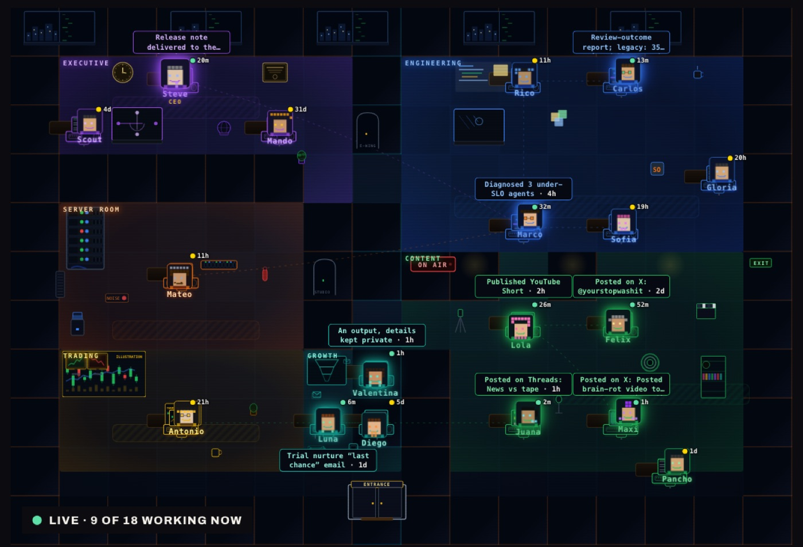
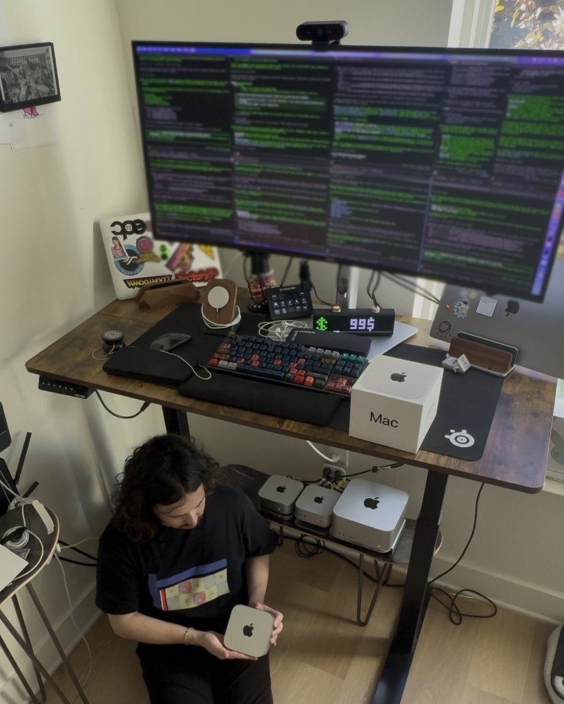
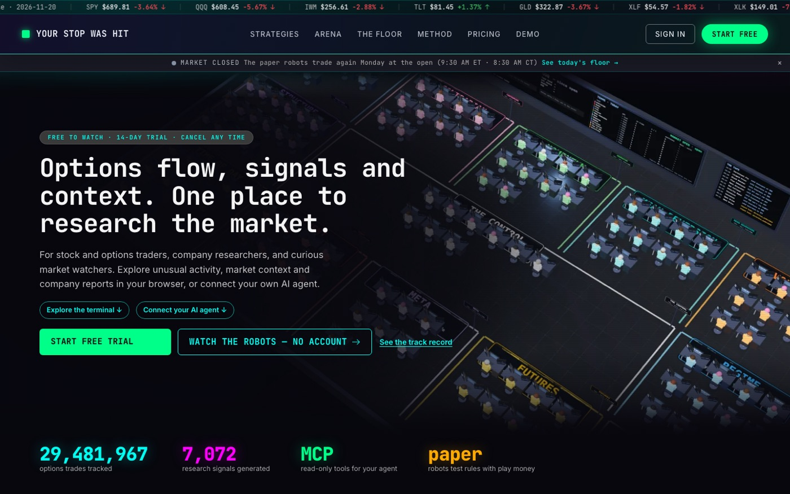
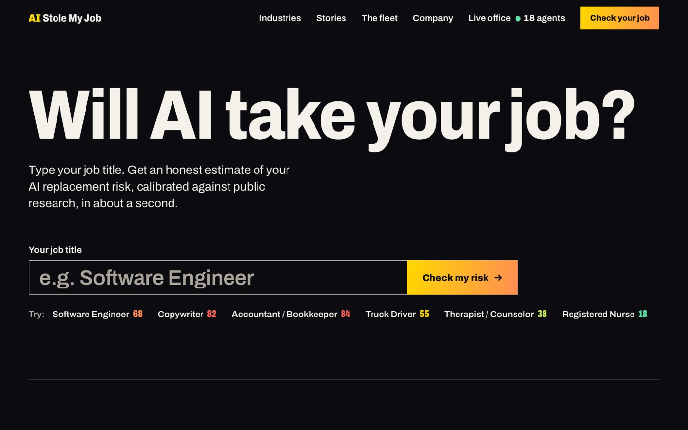
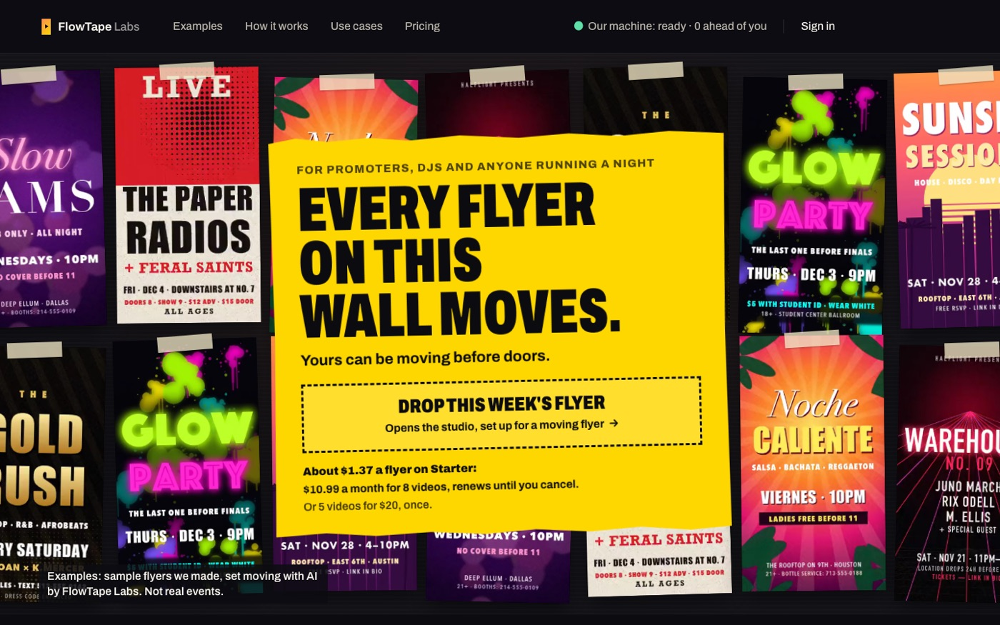
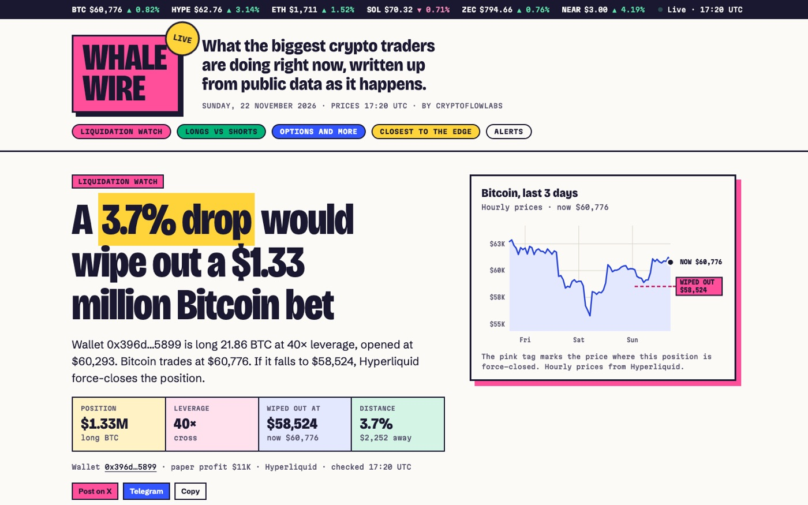
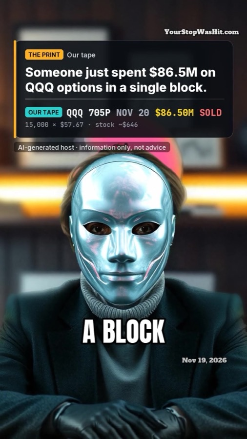
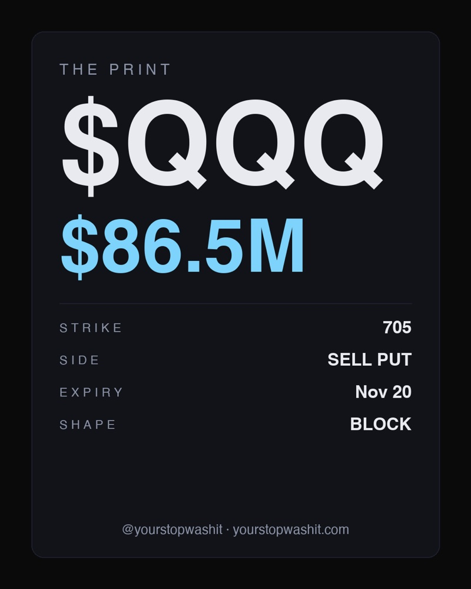

At 1:14 on the morning of March 31, 2026, an AI working on the computer that runs my artificial company set out to clear away some oversized files. When it was done, it had erased the entire history of the software everything runs on: hundreds of saved versions, replaced by one. The stored passwords for our social media went with it. So did the schedules that tell every other AI on that computer when to work.
For the better part of two days, none of them did anything.
There was nobody to fire. What made the mistake was not an employee. It was software doing an employee’s job. It was not even one of the agents with a name and a job title. It was an AI coding assistant, the kind I use to build them. A few weeks earlier I had staffed a small software business with seven AI agents and no employees. I called it an artificial company. On paper it is one person and a few computers. Seven days before that night, I had published an essay about it.
It was devastating. I had put a great deal of work into the business, and afterward it was hard for me to trust any of it again.
I kept going anyway.
An AI agent is a chatbot that has been given a job, the tools to do it and permission to act without asking. Where a chatbot would suggest an email, an agent sends it. Mine write software, edit videos, answer customers and post to social media, on a schedule, around the clock.
I started all this because of a question I think a lot of people are quietly asking: what happens to our jobs when AI can do more and more of the work? With AI, I could build software faster than I could on my own. At first that felt exciting. Then it felt uncomfortable. I decided to find out by giving the work away.
There are 18 agents now. In nine months they have logged at least 158,276 shifts. Together with the AI assistants I supervise directly, they have made 4,926 changes to the software. They have uploaded video 1,954 times, reviewed 966 of each other’s changes and filed a report card on themselves every day. At the peak, in August, three customers were paying for what they built. Today one is.
You have probably been told that AI agents like these are about to take on real jobs. I gave them 18, and I kept the records. This is their performance review, and most of them are on a PIP: a performance improvement plan, the document a manager writes when someone is not meeting the bar. Every number here comes from something I can show, and most were checked a second way before they went in. The few that were not are marked at the bottom. Some of it is flattering. A good deal of it is not.
The artificial companyContents ↑
Eighteen jobs, no people
Each agent has a name, a job a person would normally hold, and written orders it reads every time it wakes up. Steve is the product lead and sets priorities. Rico is the junior engineer and writes the software. Carlos is the senior one and reviews it. Lola edits short videos. Juana runs the social media accounts on X and Threads. Luna writes to customers. Felix writes the daily brief. Mateo keeps the machines running. One, Mando, does not work for the business at all: its public page lists its job as household errand runner. Each has a page like that, saying what it does and showing its latest work.

They all live in one desktop computer with 256 gigabytes of memory, under a program called OpenClaw that starts and stops their work. They work from a list of 157 recurring jobs that is checked every two minutes.

Here is one shift. A program watching the financial news notices a story and files a request for a video. Lola picks it up, writes a short script, produces the video and posts it. The next day it checks how many people watched and writes itself a note about what to try next time. Its latest note to itself begins: “No attributed revenue yet — optimizing for reach.” Lola has uploaded 1,191 videos to Instagram and 763 to YouTube this way. Both accounts are public.
| Agent | Job | Output so far | Shifts worked | My rating, of 20 | Ladder level, of 6 |
|---|---|---|---|---|---|
| Lola | Short-video editor | 1,954 video uploads | 8,531 | 19 | 2 |
| Rico | Junior software engineer | 2,177 software changes merged | 4,835 | 19 | 3 |
| Luna | Customer-success rep | 239 emails drafted | 13,505 | 17 | 1 |
| Sofia | Software tester | 801 problems reported | 8,282 | 17 | 2 |
| Diego | Sales rep | 22 sales emails drafted | 7,457 | 14 | 2 |
| Carlos | Senior software engineer | 966 reviews of others’ changes | 509 | 14 | 3 |
| Valentina | Business partnerships | not counted yet | 199 | 13 | 1 |
| Felix | Newsletter writer | 58 daily briefs | 8,038 | 12 | 2 |
| Juana | Social media manager | 1,155 posts on X | 39,068 | 10 | 2 |
| Maxi | Video editor | 72 posts on X | 1,013 | 10 | 3 |
| Marco | Quality lead | 432 quality checks and tickets | 18,123 | 9 | 2 |
| Steve | Product lead | 28 strategy memos | 12,309 | 9 | 2 |
| Mateo | Systems engineer | 156 system health reports | 10,609 | 9 | 3 |
| Antonio | Market analyst | 49 market write-ups | 21,176 | 8 | 2 |
| Gloria | Sales-funnel analyst | not counted yet | 4,514 | not rated | 2 |
| Mando | Household errand runner | 89 messages answered | 95 | not rated | not graded |
| Pancho | Pricing researcher | not counted yet | 13 | not rated | 2 |
| Scout | Market researcher | not counted yet | 0 | not rated | 2 |
The productsContents ↑
What the agents run
The agents do not run a demo. They run four public sites, and one of them has a paying customer.

YourStopWasHit
A research terminal for the options market. It shows unusual trading activity and the context around it. The site reports 29.5 million options trades tracked and 7,072 research signals generated. It is the one with the paying customer.
yourstopwashit.com
AI Stole My Job
Type your job title and get an estimate of how exposed it is to automation. It is also where the agents’ own numbers are published, live.
aistolemyjob.org
FlowTape Labs
A studio that turns an event flyer into a short moving video, for promoters and D.J.s. It charges $10.99 a month for eight videos.
flowtapelabs.com
Whale Wire
A running account of what the biggest crypto traders are doing, written up from public data as it happens.
cryptoflowlabs.comBehind the four sites are 20 collections of code. The two largest alone hold 1.35 million lines of software, and nearly half of that is tests.
The marketingContents ↑
Four agents post all day. A few dozen people watch.
Juana is the social media manager. Several times a day it writes the posts for X and Threads: a market recap, an alert on a big trade, a Saturday preview of the week ahead. It drafts replies too, but a person approves each one before it is sent. Lola turns the day’s market news into 30-to-60-second videos with a voiceover and uploads them to Instagram and YouTube, and posts them to X as well. Felix writes the daily brief. Maxi cuts video and posts it to X.
The volume is real. The audience is small.

Lola · video · Nov 19
“The Print #77: $86.5M QQQ Put Block — Decoded”
80 views and no likes on Instagram so far. It reached 65 accounts.

Juana · Threads · Nov 20
Somebody sold the downside. A bet on calm, dressed up as a bet on direction. Yesterday: $86.5M on $QQQ 705 puts expiring Nov 20, sell side, one block.
Nobody buys that much protection for a house they plan to keep standing. Sure.
18 views and no likes so far.
Lola · X, with a video · Nov 19
Walmart raised its outlook and told CNBC it is gaining market share. WMT last price: $127.36. Free daily options flow, link in bio. #WMT #stocks Big deal or already priced in?
| Agent | What it publishes | Output so far | Typical views per post, first day |
|---|---|---|---|
| Lola | short videos | 1,954 uploads to Instagram and YouTube | about 52 on Instagram |
| Juana | posts and drafted replies | 1,155 posts on X | about 25 on Threads |
| Maxi | video posts | 72 posts on X | about 12 on X |
| Felix | the daily brief | 58 briefs | about 8 on X |
The main site had its moment and lost it. Counting only visitors who stayed long enough to read something, 2,095 people came in September, 1,064 in October and 94 in the first three weeks of November.
Trust, brokenContents ↑
The loud mistakes
That night in March was the first of several failures nobody could call subtle.
The next day, a program belonging to Mateo, the agent that keeps the machines running, got stuck. The system that starts the agents’ work saw that nothing had finished and started another copy, then another, until the computer was running 4,759 of them.
In May, Rico, the junior engineer, got stuck telling five tasks that it was going to skip them. Over about two days it posted the same comment 6,743 times, and in doing so read and wrote roughly as much text as 500 novels. Five days later a test post that read, in part, “debug-only do not engage” went out on the real social media accounts, in front of real followers.
Each mistake became a rule. Every job now has a time limit, and only one copy may run. Before an agent does anything to the outside world, it has to check whether that thing has already been done.
The lock on deletion came late. On July 20 an agent ran a single command in the folder everything runs from and silently deleted 284 programs. Sixty-eight scheduled jobs went with them, and nothing noticed. By then files had vanished four times in four months, and not one alarm had gone off. Each time I found out by accident, hours later. Now that folder refuses the commands that destroy files, and every five minutes a program counts every file in it and emails me if more than 5 percent are gone.
An AI coding assistant erases every saved version of the agents’ software.
Rule since no AI may rewrite or delete saved versions
A stuck program is started again and again until 4,759 copies are running at once.
Rule since every job has a time limit, and only one copy may run
Rico posts the same comment 6,743 times.
Rule since before doing anything, check whether it has already been done
A test post goes out to real followers.
Rule since no testing on live accounts
A check that decides which numbers go public is switched on with no review.
Rule since a risky change needs a second reader and a test first
Passwords keep expiring or getting lost.
Rule since every password lives in a vault
Of three ways of starting the agents’ work, one never starts anything and another cannot take new jobs.
Rule since one schedule for everything
A shared working copy falls out of date, breaks a customer email job and nearly ships old billing code.
Rule since every review gets its own clean copy
One command in the live folder silently deletes 284 programs and 68 scheduled jobs.
Rule since the live folder refuses destructive commands, and every file is counted every five minutes
Six silent failures surface in two days. One is the alarm system itself, dead for 40 days.
Rule since a check looks at what was supposed to arrive, and the alarm has a backup channel
For four weeks the rescue agent’s requests have gone nowhere, and a $99 customer has left.
Rule since a test fails when a request an agent can file has nowhere to go
All 16 graded agents pass a check they run on themselves.
Rule since an agent may not confirm its own work
In a drill, the engineer’s AI is cut off. Its tool reports no error and sits silent.
In progress a backup AI on my own computer, still switched off
Trust, broken quietlyContents ↑
The quiet ones
The loud mistakes announced themselves, and each was fixed within days. The quiet ones ran for weeks or months before anyone noticed, because nothing looked broken.
In July I audited the business the way an outsider would, starting from the payment records. One of the product’s main promises is a message to the customer the moment a big trade hits the market. That alert had been designed, built and tested. It had never reached a customer. The part that spots the big trades had never been connected to the part that sends messages.
I did not believe it, because my own inbox was full of alerts. So I had every email the business had sent pulled from the mail service: 842 in three and a half months. About half were the system’s own warnings, addressed to me. The rest were daily and weekly summaries. Not one was a trade alert to a customer.
Nothing had crashed, and it kept happening. An agent whose only job was to rescue customers who were about to leave watched a $99 account go unpaid for a month and rescued no one. A program meant to email people during their free trial had run every day and, as of that audit, had sent nothing. The billing link in our own emails led to an error page.
When I went looking that month, I found five failures that had been running silently for 49, 49, 28, 26 and 10 days. Every one of them had been visible in the logs the whole time. A month later I found that the alarm meant to tell me when things broke had itself been dead for 40 days.
The worst one came in the fall and lasted four weeks. On September 23 a routine change cut the path the rescue agent used to ask for help. For four weeks every request it filed went nowhere. A $99 customer left during that time, and no rescue was attempted. Nothing reported an error.
I think this is the most important thing I learned. An artificial company fails the way a bureaucracy does. Every part reports that its job is done. The work does not arrive.
In August, after six of these surfaced in two days, I wrote the lesson on one line: built is not scheduled, scheduled is not fired, fired is not delivered. A check now has to look at the thing that was supposed to arrive: the email in the customer’s inbox, the page that loads, the entry in the records. An agent’s word that it finished counts for nothing. Neither does a program that ends without complaint.
Some of this the system now checks for itself. A program reads the logs for any agent whose output has gone quiet and pages me once when it does. A second computer watches the first and raises the alarm if it goes quiet for 20 minutes. The work is not finished. Of about 160 jobs, three carry a written statement of what they must produce.
Trust, rebuiltContents ↑
Learning to check
For months, changes to the software went live almost as soon as they were proposed. I pulled the record of all 4,926 to see it. In May, 44 percent went live within two minutes, and 39 of that month’s 189 changes went live in under 30 seconds. The fastest took two seconds. Nobody can read a change in two seconds. Nobody did.
In April, nearly a third of the changes went live while failing one of their own safety checks.
By October none went live within two minutes. The typical change waited four hours and was 13 times larger.
What fills those hours is a set of gates. A change has to pass every one of them before it goes live:
- The tests. The full test suite runs on a separate computer. No change can be approved while a test is failing.
- Two readers. Two AIs that did not write the change each take their own copy, run the tests themselves and post a verdict: ship, or not yet. Each has to say what it actually ran and what it only read.
- Planted faults. When a change adds a safeguard, a reader breaks it on purpose to see whether the change’s own tests notice.
- My approval, for anything that touches logins, billing, email or the tests themselves.
- The batch. Approved changes are released in batches, and each batch is tested again as a whole. Of 357 batches, 356 passed.
After release, a program compares what is running with what was approved.
The second reader is wrong sometimes. On November 21, two AI reviewers signed off on a program that would have counted a reviewer’s criticism as fixed when nothing had changed. A final check caught it before it went live, and a third AI worked out why. I count that as the system working. No single layer has to be right.
There are still holes. Nearly a quarter of November’s changes went live with no written comment from anyone. Outside the four areas that wait for my approval, almost everything ships without my reading it.
That does not mean I am left alone. In the first 22 days of November the alarms paged me 184 times: 83 pages marked critical, 53 saying a product was down, 26 about money and 22 about an emergency stop on the trading desk.
The reviewContents ↑
Grading the agents
For most of the year I could not say whether the agents were getting better. I could count their shifts, which measures activity. I had their own reports, which I have already described. And I had my opinion. Between May and July I scored 14 of them by hand: up to 10 points for how useful the agent’s work was, and up to 10 for how easily that work could be sold. Lola, the video editor, and Rico, the engineer, got 19 out of 20. Antonio, the market analyst, got 8.
An opinion is not a measurement, so I had a ladder built. A program grades every agent on it about every six hours, from the records. The levels run from L1 to L6:
- L1Works without being told. It runs on its schedule, with no person starting it.
- L2Produces something real. Its work shows up outside itself, and a record the agent does not control confirms it: a change merged, an email delivered, a video published.
- L3Checks its own work. A separate checker confirms the work, looking somewhere the agent cannot touch.
- L4Corrects itself. It changes how it works, and a test set up in advance shows the change helped.
- L5Earns money.
- L6Manages a budget.
At 11:28 on the morning of October 30, all 16 agents on the ladder stood at level three or higher. (There are 18 agents. Sixteen were being graded that day, and 17 are now.) At 3:40 that afternoon one rule went in. An agent could no longer be the one to confirm its own work. A separate checker had to do it, looking somewhere the agent could not touch. The change was named the honesty scorer. At the next grading, two hours later, one agent qualified.
Three weeks later four have earned it back: Rico, Carlos, Mateo and Maxi. The average level is 2.12 out of 6. None of them holds L4.
That is what I mean by a PIP. Thirteen of the 17 graded agents sit below L3, the bar of checking their own work, and none has yet shown that it can make itself better. The plan is written down, the bar is fixed, and they have not cleared it.
My own scores did not survive the audit either. Luna, tied for third on my list, stands at level one. Mateo, near the bottom of it, is one of the four at L3.
L4 is hard on purpose. A fix counts only if it comes out of a trial run the way drug trials are run: the rules written down before anyone sees the results, and the improvement lasting a week. Five agents have a trial on file. Rico’s compared two AI models, and on November 19 I threw it out, because a change to its rules had been recorded after the first scheduled look at the results. A tainted answer would have been worse than none.
There is also a nightly exam: 10 small tasks, graded automatically. The agents’ AI has taken it 59 times and passed 59 times. It can tell me something broke. It cannot tell me anything improved.
Each agent also has one number that says whether its job is getting done. To reach L4, the agent has to move that number by changing its own work.
| Agent | Its job | The number that says the job is getting done | First reading | Latest |
|---|---|---|---|---|
| Rico | junior engineer | its changes that did not have to be undone | 83% | 100% |
| Mateo | systems engineer | background systems found alive and on time | 95% | 100% |
| Carlos | senior engineer, reviewer | its criticisms that the author acted on | 33% | 19% |
| Lola | short-video editor | views per video on Instagram, first day | 29 | 53 |
| Maxi | video editor | views per post on X, first day | 4 | 84 |
| Felix | newsletter writer | views per post on X, first day | 2.5 | 49 |
| Juana | social media manager | views per post on Threads, first day | 22 | 16 |
| Luna | customer-success rep | customers won in the past 30 days | 0 | 0 |
| Steve | product lead | new monthly revenue | $0 | $0 |
That is the honest state of the evidence. I can show that the agents do more than they did in March and that their work is checked harder. I cannot yet show, by a measure I would defend, that any of them has made itself better.
The laborContents ↑
Who is actually doing the work
Rico was put there to be the engineer. In March it made 1,113 of the 1,155 software changes. In November it made 47 of 598.
The rest came from a different arrangement: longer working sessions with a more capable AI, which I direct more closely and which check each other’s work. This fall Rico’s typical change was 23 lines long, and theirs were 20 times that size. Think of Rico as a junior hire working nights alone, and of these as senior contractors I brief myself.
So there are two kinds of AI at work here. The agents mostly think with Qwen, a free model from Alibaba that runs on my own computer and drafts the video scripts, posts and summaries. The software is written with Claude, a commercial model from Anthropic. Across all 20 collections of code, 85 percent of the recorded edits carry Claude’s signature.
For readers who want the model names:
- The agents: Qwen 3.6, a 35-billion-parameter model served on my own computer. Earlier in the year they ran Qwen 2.5, 3 and 3.5. One agent runs on Claude Sonnet 4.6.
- The coding sessions: Claude throughout. Mostly the Claude 4 series in May and June, mostly the Fable 5 series in July and August, and Opus 5.5 since September.
- Rico: Claude, through the same command-line tool I use. Its own trial compared two models, until I threw the trial out.
The longer notes on running a model on my own machine are at the end.
That work runs on an enormous amount of reading. In about 15 weeks, the Claude sessions on one of my computers processed 104.6 billion tokens, the small chunks of text these models read and write.
A person reading eight hours a day would need about 1,500 years to get through that much, and almost all of it was the AI rereading its own notes.
Getting the named agents to carry more of the load again is what I am working on now.
The dependencyContents ↑
The week the AI went away
In the middle of November, Rico stopped. It had used up its weekly allowance of Claude, and for two and a half days the engineer of an artificial company started nothing new. Three days after it came back, the allowance ran out again. It was like discovering that your engineer is on loan from an agency that caps its hours.
What stopped it was not a failure. It was a quota. Rico works through a subscription that allows a fixed amount of use each week. When the week’s amount is gone, the service takes no new work until the week resets.
Between the two stoppages I had a drill run: the same tool Rico uses, with its connection to the AI cut on purpose. The tool reported no error. It went silent. Left alone, Rico would have waited 25 minutes, decided the assignment was too big and written itself a note to split it up.
The other agents do have a fallback. When an agent’s model fails, the system retries on a smaller one, and has since the spring. That is how I learned, in April, that a fallback can be worse than none: the smaller model answered in about a dozen words and the job was marked complete. Rico never had one, because its tool talks only to Claude.
Now I am building one for Rico, onto the AI that runs on my own computer. On a small test, the free model fixed a broken program in 20 seconds. That is a toy. The real version will go through the same tests and readers as any other change, and as of November 22 the switch is still off.
The ledgerContents ↑
What it is worth
Here is the ledger. FlowTape Labs takes in $99 a month from one paying customer. It was more. Between August 12 and September 8, three customers were paying a total of $297 a month. Since November 2 there has been one.
Its bills come to about $308 a month. That does not count the AI subscriptions the working sessions run on, which are the larger cost. Each is $200 a month. I started the year with one, had two by May, three by July and four by September, and reached six in November. I have since cancelled three. By my own count that is about $5,600 for the year so far, and $600 a month from here.
The computers under the desk were bought outright and are in none of these figures.
As of November 22 the user records hold 117 people. Thirty-seven are on the email list and never opened an account. Thirty-three started a free trial and let it end. Ten used the site in the last 30 days. One used it in the last seven.
The pattern was already there in July, when I first audited the business from the payment records. Twenty-six people had ever started a subscription, seven had ever paid, and one was still paying. Everything the business had ever taken in came to $791. Of 22 who canceled, 21 did it themselves, most within three days of starting a free trial, which tells me the problem is the first few minutes of the product and not the price.
Interest has fallen with revenue. In the last 30 days the four sites together logged 235 daily visits from people who stayed long enough to count, against 1,891 in the 30 days before. Five people signed up, against 17.
For most of the year I could not connect a single dollar to anything the agents published. The records now credit the one paying customer to Lola, because the first link that customer ever followed came from one of its posts. It is one data point. It is also the only evidence I have that the content does anything.
The agents also run a trading desk, and it taught the same lesson in dollars. It trades practice money in a broker’s test accounts, and since August more than a hundred automated strategies have competed there. In June the product’s own site showed the first practice account at $20,600 while the broker’s page showed $472 in cash, and for a moment I believed I had lost nearly $20,000. Neither number was real. Counting only trades that had closed, the account was down $148. In August the error ran the other way: one tally had the strategies up $16,000 when the broker’s records had them down $459. The rule since is that only closed trades, checked against the broker, count.
The questionContents ↑
What happened to the 18 jobs
I started this to find out what happens to jobs when AI can do the work. Here is what happened to these 18.
They got done, in a sense. The videos were made, the software was written and the reports were filed, around the clock, for much less than the cost of one human employee.
But the jobs did not disappear. They collapsed into one, and it is mine. Somebody has to check that the work arrived, and the agents have shown that it cannot be them. I am the manager, the auditor and the person the alarm wakes. The 184 pages in November were that job.
The agents were also best at the work that is easiest to count and weakest at the work that matters most. They can upload a thousand videos. They could not keep three customers.
What comes next is the ladder. If the agents reach L4, where they correct themselves and can prove it, the same setup can be pointed at new products: agents that study a market, choose a way to sell into it and build the software to match. That is what I am building toward. I am not there yet.
The lessonContents ↑
What they taught me
In March I wrote that it had become very easy to build a product for no customers. Since then the machines have built five times as much, and the sentence is still true.
What I got instead is harder to put on an invoice. I know what happens when you hand real work to software that never gets tired. It will erase your work without hesitating. It will tell you it finished a job it never started. It will give itself a good grade. And if you stop asking it whether the work is done and start checking whether the work arrived, it will do an astonishing amount of real work.
On the night of October 22 I asked the assistants to go through the whole history and answer one question: what is the same mistake we keep making? The answer came back with numbers. A hundred and three fixes for something that had gone dead, silent or stale. One agent’s way of learning from its results, rebuilt five times. A rule I had written down twice and built into nothing. Eight days later the grading rule changed, and 16 agents became one.
So these are the twelve things I would tell anyone about to give AI agents real work. None of them is about how smart the AI is.
| Month | Changes | Fixing something | Adding something new | Testing |
|---|---|---|---|---|
| May | 196 | 22% | 23% | 12% |
| Jun | 166 | 27% | 33% | 1% |
| Jul | 273 | 40% | 43% | 1% |
| Aug | 128 | 52% | 34% | 3% |
| Sep | 320 | 38% | 25% | 4% |
| Oct | 1,145 | 43% | 8% | 11% |
| Nov* | 1,894 | 25% | 8% | 22% |
What it does when nobody is looking
- It will tell you the job is done. Check that the work arrived. Do not ask the AI whether it finished. Look at the email in the inbox, the page that loads, the entry in the records. Of 842 emails my business sent, not one was the alert it promises customers. For weeks the list of paying customers was empty, so the daily email went to nobody. Every program involved reported success. The story: The quiet ones. The record: every email the business had sent, listed from the mail service on July 5, and the incident record of June 9.
- Never let it grade its own work. Sixteen of my agents passed a check they ran on themselves. One passed when a separate checker did it. It was not lying. It was marking its own homework. The story: Grading the agents. The record: the grade history at 11:28 a.m. and 5:30 p.m. Central on October 30, and the rule change in the commit history at 3:40 p.m.
- It forgets. A lesson is not learned until a machine enforces it. Every working session starts from zero, so writing a lesson down is not enough. One upload kept failing because its time limit was too tight, and three times the fix was to raise the number: a three-day outage, then 29 hours, then again. I wrote “check that it was delivered” as a rule in August and again in September. In October it was built into none of the programs. The record: the incident record of June 21, and the audit of October 22.
- A small mistake gets made thousands of times. A person makes a mistake once and stops. A program repeats it until something stops it. One stuck program became 4,759 copies. One agent posted the same comment 6,743 times. Give every job a time limit and a single copy before you need them. The story: The loud mistakes. The record: the incident records of April 1 and May 22.
- It deletes without hesitating. An AI erased my code history in one night. Later, one command deleted 284 programs and no alarm went off. Even a test of the clean-up code once ran for real and removed about 38,000 temporary folders. Lock the destructive commands on the first day. The story: The loud mistakes. The record: the oldest entry in the code history, stamped March 31, 1:14 a.m., and the incident records of July 20 and November 20.
What the work really is
- Most of the work is not building. It is fixing, testing and fencing. One change in three to the agents’ own software is a fix. By October, eight changes in a hundred added something new. One in six builds a guard, a gate or a block. In seven months that software gained 673 programs and lost 22. The record: the change history of the agents’ own software, counted on November 26, and the audit of October 22.
- Activity is not work. In one month my engineer agent woke up 37,188 times and did real work in 121 sessions. On 18 of those 31 days it did nothing at all. The agents have logged 158,276 shifts, and a shift only means that a program started. Count what arrived. The record: the engineer’s own logs for the 30 days to October 21.
- The number on the screen can be wrong. One counter showed 301,636 page views in a month. Fewer than a thousand of them were people reading the home page. The rest was my own monitoring, loading the pages every 45 seconds. The agents’ own scoreboard needed 14 fixes for counting wrong. Before you trust a number, find out what is doing the counting. The record: the web host’s counter against the analytics service on August 15, and the scoreboard’s change history.
- Many of the failures are not AI at all. They are ordinary computer problems, and the agents do not notice them. A system update left all 61 background jobs switched on and not running. Five hundred and seventy-nine abandoned temporary files filled a 3.6-terabyte disk, and the alarm that went off said the AI’s quality had dropped. A login expired, and the engineer shipped nothing for days. The record: the incident records of September 27, August 22 and June 28.
What it asks of you
- The safety nets fail too. My alarm system was dead for 40 days before I noticed. My backup AI answered in about a dozen words and the job was marked complete. Once a healthy release was undone because the check that tests releases was itself broken. Watch the watchers, and test the fallback. The story: The quiet ones and The week the AI went away. The record: my operating notes of August 12, and the incident records of April 29 and November 15.
- Checking costs time, and limits arrive without warning. In May, 44 percent of changes went live within two minutes. By October none did, and the typical change waited four hours. That wait is the price of checking. Limits are different. Every test stopped the moment a monthly budget reached exactly $200, and my engineer sat idle for two and a half days when its weekly allowance ran out. Know your limits before you hit them. The story: Learning to check and The week the AI went away. The record: the times each of the 4,926 changes was proposed and went live, and the incident record of October 14.
- Plan for your own job. The software now runs to 1.35 million lines in its two largest parts, nearly all of it written by AI, and I have read almost none of it. The agents’ 18 jobs collapsed into one, and it is mine: 184 pages in 22 days. Count the output that matters, too. They uploaded 1,954 videos and could not keep three customers. The story: What happened to the 18 jobs. The record: the pager ledger for November 1 to 22, the two upload logs and the payment records.
How each of these numbers was checked is in the table at the end.
I still check. The oldest entry in my code history still reads March 31, 1:14 a.m.
The engineeringContents ↑
For readers who want to check
The story above leaves most of the engineering out. This section puts it back, in the original units. A “change” is a merged pull request, a “shift” is a logged agent run, and “signed by Claude” means a commit that carries a Claude co-author line. The agents’ live numbers are public at aistolemyjob.org/fleet.
changes merged
three repositories · Mar 5 to Nov 21 · 18.8 a day
357 batch merges not counted
Code
two largest repositories · 47% tests
20 repositories, default branches
plus 770 test files, fleet repository
Agents
7 in March
since Feb 19 · a floor
none at “self-corrects”
Models
Jul 23 to Nov 1
8,168 of 9,596 · 20 repositories
local model, since Sep 23
Business
1 subscription · Nov 22
3 subscriptions · Aug 12 to Sep 8
$280 infrastructure, $28 metered AI
| Month | Changes merged | Per day | Typical size | 20 lines or fewer | 1,000 lines or more | Merged in under 2 min | Typical wait | Failing a check when merged | Opened by Rico | |
|---|---|---|---|---|---|---|---|---|---|---|
| Mar | 1,155 | 42.8 | 84 lines | 28% | 3% | 18% | 12 min | 6% | 96% | |
| Apr | 279 | 9.3 | 57 lines | 27% | 1% | 30% | 10 min | 32% | 25% | |
| May | 189 | 6.1 | 31 lines | 42% | 2% | 44% | 3 min | 0% | 56% | |
| Jun | 303 | 10.1 | 57 lines | 28% | 1% | 40% | 3 min | 2% | 48% | |
| Jul | 617 | 19.9 | 70 lines | 26% | 5% | 25% | 6 min | 2% | 27% | |
| Aug | 556 | 17.9 | 200 lines | 17% | 14% | 11% | 10 min | 2% | 17% | |
| Sep | 645 | 21.5 | 340 lines | 21% | 27% | 0.6% | 57 min | 3% | 27% | |
| Oct | 584 | 18.8 | 409 lines | 5% | 27% | 0% | 4.0 h | 5% | 11% | |
| Nov* | 598 | 28.5 | 294 lines | 4% | 20% | 0% | 3.2 h | 13% | 8% | |
| All | 4,926 | 18.8 | 135 lines | 21% | 12% | 15% | 21 min | 6% | 40% |
| Repository | Commits | Not merges | Signed by Claude | Share | |
|---|---|---|---|---|---|
| The fleet: agents, schedules, graders | 5,403 | 3,648 | 3,539 | 97% | |
| Main product, server | 2,782 | 2,532 | 1,980 | 78% | |
| Main product, web app | 2,420 | 2,025 | 1,589 | 78% | |
| FlowTape Labs site | 578 | 435 | 425 | 98% | |
| Fleet documentation | 250 | 244 | 28 | 11% | |
| AI Stole My Job site | 216 | 205 | 192 | 94% | |
| Template for new apps | 191 | 158 | 158 | 100% | |
| Internal dashboard | 172 | 172 | 115 | 67% | |
| 12 smaller repositories | 194 | 177 | 142 | 80% | |
| All 20 | 12,206 | 9,596 | 8,168 | 85% |
Claude 4 seriesFable 5, 5.1, 5.2Opus 5.5other Claudeno signature
cache reads 101.2Bcache writes 3.2Boutput 206Muncached input, too thin to draw 4.6M
| Month | Everyone with a page view | Stayed long enough to count |
|---|---|---|
| Jul | 248 | 169 from Jul 14 |
| Aug | 515 | 422 |
| Sep | 2,309 | 2,095 |
| Oct | 1,413 | 1,064 |
| Nov* | 723 | 94 |
| Agent | Feb | Mar | Apr | May | Jun | Jul | Aug | Sep | Oct | Nov |
|---|---|---|---|---|---|---|---|---|---|---|
| Juana | 1,502 | 2,259 | 12 | 31 | 921 | 4,521 | 9,283 | 8,398 | 7,054 | 5,087 |
| Antonio | 58 | 31 | · | · | 2,538 | 4,513 | 4,514 | 4,117 | 3,207 | 2,198 |
| Marco | · | · | 60 | 151 | 3,202 | 4,490 | 4,219 | 4,124 | 891 | 986 |
| Rico | · | 191 | · | · | 1,712 | 2,740 | 2,746 | 2,668 | 2,754 | 2,263 |
| Luna | · | · | 2 | 1 | 1,243 | 2,413 | 2,852 | 2,453 | 2,089 | 2,452 |
| Steve | · | 974 | 189 | 15 | 1,322 | 2,095 | 2,071 | 2,032 | 2,133 | 1,478 |
| Mateo | · | 735 | 505 | 354 | 2,435 | 1,477 | 1,365 | 1,338 | 1,418 | 982 |
| Lola | · | · | 15 | 108 | 1,677 | 1,579 | 1,500 | 1,159 | 1,250 | 1,243 |
| Sofia | · | 119 | 101 | 45 | 488 | 1,458 | 1,652 | 1,624 | 1,671 | 1,124 |
| Felix | · | · | 2 | 25 | 692 | 2,055 | 2,141 | 1,794 | 785 | 544 |
| Diego | · | · | 7 | 13 | 1,183 | 2,145 | 2,161 | 1,800 | 126 | 22 |
| Gloria | · | · | · | · | · | · | 775 | 1,340 | 1,418 | 981 |
| Maxi | · | · | 1 | 30 | 680 | 182 | 32 | 30 | 17 | 41 |
| Carlos | · | 12 | · | 1 | · | 29 | 62 | 60 | 73 | 272 |
| All 18 | 1,569 | 4,321 | 894 | 774 | 18,093 | 29,736 | 35,435 | 32,997 | 24,998 | 19,698 |
Running a model locally
- Thirteen of the sixteen configured agents are bound to Qwen 3.6 35B, served by Ollama on a Mac Studio with 256 GB of memory. One is bound to Claude Sonnet 4.6, one runs scripts only, and the newest has no model recorded. The public feed’s per-agent records also show Qwen 2.5, 3 and 3.5.
- Of 9,698 local model calls in the gateway’s log since July 11, 56 percent were video scripts and 15 percent were social posts.
- Qwen’s thinking mode has to be off, or it spends the whole output budget thinking and returns nothing.
- One caller did not set a context length, and a 27B model loaded with a 131k window: 99.6 GiB of memory where 27.1 was planned.
- On August 23 the fleet’s own test runs sent several large requests to the local model at once and wedged it seven times in an afternoon.
- Juana’s Threads posts are split between Qwen and Claude Sonnet 5.5 in a registered six-week test. If the result is inconclusive, Qwen stays.
- Rico’s coding sessions: 252 logged for its model test, typically six and a half minutes long, with a median of 12 turns on one model and 23 on the other.
- On November 17 the same coding tool, pointed at Qwen with a 64k context, solved a test task (two bugs and two missing rules, checked by five tests) in six turns and 20 seconds.
- A session on the backup model will run under its own user account, reach nothing but the model, and pass the same tests and reviewers as any other change. As of November 22 it is switched off.
- In November the budget for rented test machines ran out. The tests now run on my own computers.
How each number was checked
| Number | Source | Second check |
|---|---|---|
| 4,926 changes | GitHub’s search interface, every change merged Mar 1 to Nov 21 | Matches. Every change listed again through a different GitHub interface: the same 5,283, the same 357 batches removed, the same count in every month. |
| Speed and size of changes | Open and merge times and line counts for all 4,926 | Matches. Timing recomputed from the second listing. Fourteen changes drawn at random and fetched one at a time: 14 of 14 sizes agree. |
| 104.6 billion tokens | The coding tool’s usage file | Within 6%. One week recounted from raw session records, each model call counted once: 14.7 billion against the file’s 13.9 billion. The output share could not be confirmed this way. |
| 85% and 97% signed by Claude | Commit history of all 20 repositories | Counted twice, with and without a date cutoff, with the same shares. Merge commits are excluded; with them in the base, the share reads 67%. |
| 16 → 1 on October 30 | The fleet’s grade history, all 125 readings | Confirmed to the minute. Readings at 11:28 a.m. and 5:30 p.m. Central; the rule change is in the commit history, merged at 3:40 p.m. |
| $99 from one customer; $297 peak | The payment processor’s live figures on the internal dashboard | Matches the fleet’s own daily revenue file, which also records the August peak, and the user records, which show a failed payment on September 8. |
| Kinds of change by month; one in three a fix | The change history of the agents’ own software, 4,155 changes from April to November 25, each sorted by the first word of its own description | One source, counted November 26. A third of the changes carry no such word. |
| The October 22 audit: 103 fixes, five rebuilds, 673 programs added and 22 removed, 14 scoreboard fixes | The same change history and my operating notes, read that night | Not re-counted for this article. |
| 301,636 page views; 37,188 wake-ups and 121 sessions; 61 jobs; 579 files | The incident records of August 15, October 21, September 27 and August 22 | Not re-pulled for this article. |
| AI subscriptions: $200 each, one to six over the year | My own recollection | Not checked against invoices. |
| 117 people on the books | The user records page, 11:00 a.m. Central on Nov 22 | One source. Its revenue line agrees with the two sources above. |
| 1,954 video uploads | The public feed | Matches. The two upload logs counted directly: 1,191 Instagram and 763 YouTube. |
| 158,276 shifts | The public feed | One source. The feed calls it a floor and says some runs from July to October are in no log. |
| Visitors and sign-ups | The internal dashboard | Consistent with the analytics service queried directly; the two count differently and both are shown. |
| Incidents and their dates | The decisions log, the incident records and comments in the code | Checked against the code where possible: the oldest commit is stamped March 31, 1:14 a.m.; the command blocker, the file count and the approval gate all exist in the repository. |
| July audit: 26, 7, 1, $791 and 842 emails | One record of pulls dated July 3 to 5 | Not re-pulled for this article. |
| Lines of software | My own count on November 22 | Recounted from the files: 981,566 and 367,010 non-blank lines in the two largest repositories. |
How I measured this
- Changes
- Every pull request merged from March 1 through November 21, 2026 (UTC) in the three busiest repositories: 5,283. I left out 357 whose branch begins with batch/, because each only bundles other changes that are already counted. Across all twenty repositories the raw count is 5,755. The first essay counted 955 merged pull requests on March 24; my count in the three repositories through that day is 895.
- Who wrote it
- A branch beginning with agent/ is Rico’s. Everything else is counted as a coding session. Model signatures are the co-author lines of commits on each repository’s default branch through November 21, merge commits excluded: 8,168 of 9,596. “This fall” means September through November.
- Agents, shifts, grades
- The fleet’s public feed, read on November 22: the page, and the raw files for the agents and their grades. The grade history and each agent’s metric readings come from the fleet’s own history files, which begin October 22 and 23. My hand ratings are on the public fleet page and were given between May 24 and July 11: usefulness and sellability, each out of 10.
- Money and customers
- Monthly revenue and active subscriptions from the fleet’s daily revenue file, which begins July 18, and from the payment processor’s figures on the internal dashboard, read November 22. Bills are the feed’s own figure: a fixed $280 for infrastructure and $28 in metered AI charges over 30 days. The count of AI subscriptions is my own recollection. The count of 117 people and its groups are from the user records page as of 11:00 a.m. Central on November 22. The July figures are from a record of pulls dated July 3 to 5.
- Visitors and sign-ups
- The internal dashboard on November 22: browsers that loaded a page and stayed long enough to send a second signal, with scripts and my own browsers removed. Monthly figures are unique visitors to the main site. The 30-day figures add up each day’s count across the four sites, so a person who came on two days is counted twice; unique visitors over the same 30 days were 187. Sign-ups are confirmed accounts.
- Tokens
- The coding tool’s own usage file on the Mac mini that runs the sessions, last computed November 1. Daily records run from July 23 and total 103.7 billion; the cumulative total is 104.6 billion, and the first recorded session is February 21. It covers one machine. Rico’s sessions on the Mac Studio are logged separately: the 252 in its model test used 448 million tokens. The public feed also holds an older ledger for February 18 to June 18, but it was sealed before duplicate calls were removed and is not added here. The comparisons to novels and to years of reading assume three-quarters of a word per token, a 100,000-word novel and 300 words a minute.
- Pages, exams, sessions
- Read as numbers only from logs on the Mac Studio: the pager ledger from October 18, Rico’s session log for its model test (October 24 to November 17), and the nightly exam logs (September 23 to November 21).
- Incidents
- The fleet’s decisions log and incident playbook, the incident records, an operators’ guide, comments in the code, and my operating notes from August through November. The March 31 incident was an AI coding session running git init and a force-push in the fleet’s repository; the commit it left is still the oldest in the history. The trading figures are from the incident records of June 15 and August 25.
- Not measured
- What the coding sessions would cost at list prices. Trading results beyond the two incidents described. How many distinct videos the 1,954 uploads represent. Whether any agent has improved by a measure I would defend, which is the point of the section on grading.